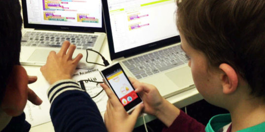
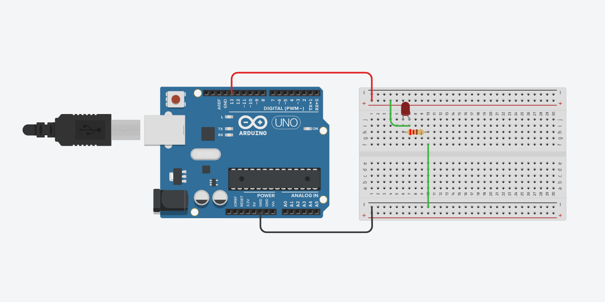
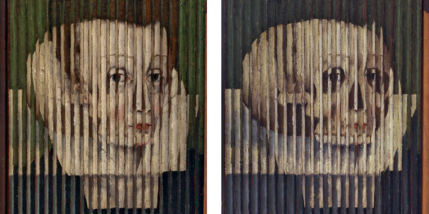
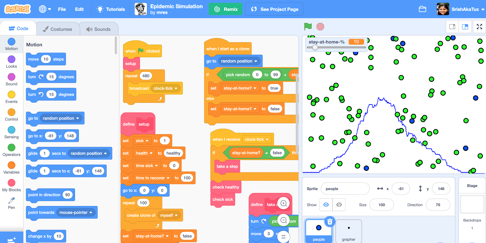

Does your child love creating, building, and learning new things? As a parent, you are wondering how your child can make the most use of this out of school time when all the schools and after-school programs are shutting down temporarily in your city? For families with kids in middle and high school, please encourage them to sign-up for a series of free, online, and hands-on workshops focused on fun and creative topics such as app development, sketching, coding with Scratch, electronics, building robots, etc. These workshops will be led by facilitators who work in the tech industry and hold a broad range of skill sets. The workshops are multilingual (in Korean, Bengali, English, Hindi, etc.) and the speakers might be able to accommodate the diverse language needs of students.
Workshops
1. Introduction to Character Designing
This course is designed for newbies, so you'll easily learn all tips and hacks for sketching cartoons. It will cover how to work with lines, and basic shapes to create interesting personalities and tell stories.
Facilitator: Anna
Language: English
Grades: 5-8
Requirements: Pencil and white paper
Date & Time: March 29th & April 5th, 4 pm Coordinated Universal Time (UTC)
2. Building Mobile Apps with MIT App Inventor
This workshop will introduce students to the MIT App Inventor and will engage them in designing mobile apps using the tool.

Facilitator: Srishti Sethi
Language: English/Hindi
Grades: 5-12
Requirements: A computer, an android device (optional), internet and a Google Account
Date & Time: April 11th, 4 pm & April 19th, 2:30 pm Coordinated Universal Time (UTC)
3. Introduction to Robotic Programming Concepts
In this workshop, students will learn about basic robot programming concepts and build skills in algebra, geometry, mental math, and spatial reasoning by working through fun robot puzzles.
Facilitator: Daniel Fitzgerald
Language: English
Grades: 5-8
Requirements: Computer with internet
Date & Time: April 12th, 4 pm Coordinated Universal Time (UTC)
4. Designing Circuits with TinkerCad
Learn how to build basic circuits (series/parallel) using simulated components in TinkerCad. Also learn how to program an Arduino to control a motor using block-based programming.

Facilitator: Suchakra Sharma
Language: English
Grades: 8-10
Requirements: Computer with internet
Date & Time: April 18th, 3:00 pm Coordinated Universal Time (UTC)
5. Making Hybrid Images using Python
In this workshop, we will create hybrid images that exhibit an optical illusion of seeing two different images, depending on the viewing distance. We will learn to do so with Python programming.

Facilitator: Hayley Song
Language: English/Korean
Grades: 6-12
Requirements: Two (similar) pictures (eg. pictures taken at the same location but different times, images of your portrait and your dad's). Computer with Python installed.
Date & Time: April 25th, 4:00 pm Coordinated Universal Time (UTC)
6. Programming with Scratch
In this workshop, students will get introduced to the Scratch programming environment and learn how to develop stories, games & animations using the tool.

Facilitator: Srishti Sethi & Suchakra Sharma
Language: English
Grades: 5-12
Requirements: Computer and internet
Date & Time: April 26th, 4:00 pm Coordinated Universal Time (UTC)
Sign-Up
Registration for Spandan Workshops for Round 1 is now closed. We might plan a Round 2 sometime later in the year. If you are interested in attending our future workshops, sign-up below to receive updates about Spandan Workshops Round 2!
Click the button below to sign-up!
Student Sign-up →Facilitators
Anna Chakravorty
Anna Chakravorty is a graphic artist and a UX designer based out of Edmonton, Canada. She is an instructor at the University of Alberta.

Daniel Fitzgerald
Daniel is a software engineer at iRobot, makers of the Roomba robot vacuum. He enjoys projects that combine hardware, software, and electronics.

Suchakra Sharma
Suchakra is a computer scientist and a designer based out of Toronto, Canada. He likes to tinker around with code and circuits.
Srishti Sethi
Srishti is a Developer Advocate based out of Oakland, California. She likes to code, develop educational tools and programs.
Hayley Song
Hayley is a PhD student studying AI for knowledge discovery in Los Angeles, USA. She likes to sketch, color-code and write to think and communicate better.
Contact
You can learn more about us at unstructured.studio. You can also contact us at: hello@unstructured.studio.
If you are an educator figuring out how you can take your classes online during this time, we will be happy to brainstorm with you the best ways to do so!
If you are willing to help conduct or facilitate more of these workshops, please fill out the form below.